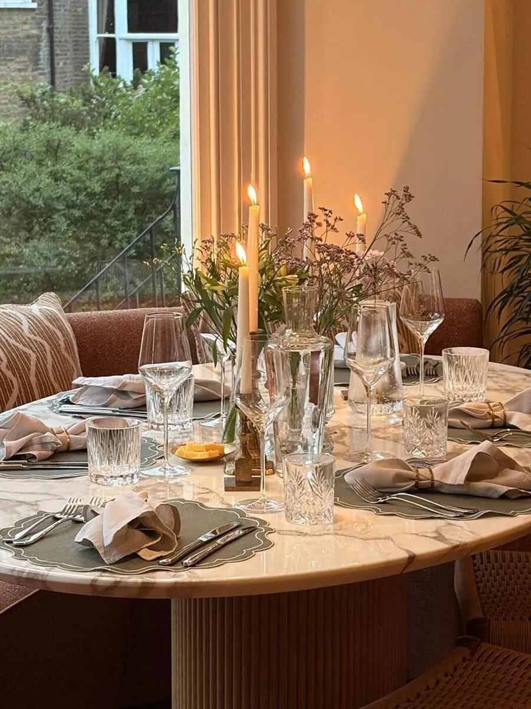
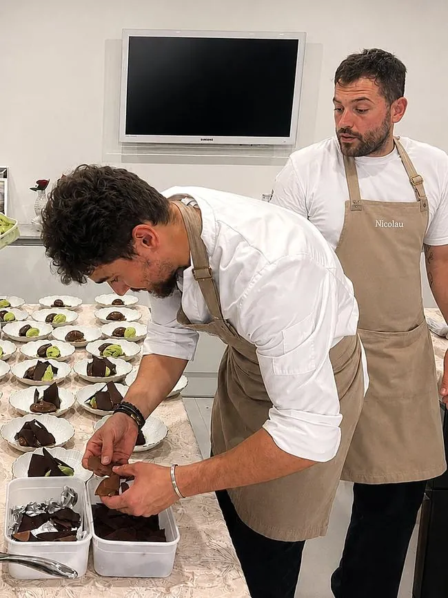

Intimate wedding catering with a private chef means one chef planning, cooking and serving the whole meal for a small guest list, at home, in a rented house or in a small venue, usually from a dozen guests to a few dozen. The menu is built with you, and the food runs from canapés to dessert without a catering-company feel.
For couples who care about the meal as much as the ceremony, this is often the main appeal. This guide covers how the menu is structured, what the kitchen needs, how dietary requirements are handled and how to plan the day.
01Is a private chef a good fit for intimate wedding catering?
A private chef suits weddings where the food is meant to feel personal: a small guest list, a home, a family house or a venue with a usable kitchen, and a couple who want restaurant-level cooking rather than a standard wedding package. Alejandro leads a team of chefs, bartenders and waiters, so the whole food and drink service can be handled by one group of people you have met beforehand.
It is a weaker fit for very large guest lists, where a catering company with a bigger production setup may be more practical. If you are weighing the two, our guides on the difference between a private chef and a caterer and on private chef versus catering company set out the differences.
02How is an intimate wedding menu structured?
Most small weddings follow the same shape, and a good chef will adapt it to your day rather than force a template.
- Arrival canapés. Light, cold-led pieces served on trays while guests gather after the ceremony.
- The wedding breakfast. A seated meal, usually three courses, timed around any speeches.
- Sharing or informal options. Some couples prefer a long table with dishes to share. Spanish-style tapas and a paella cooked at the table suit this well; see paella catering and the Spanish Heritage page.
- Dessert and cake. A wedding cake is normally made by a specialist, and the chef plans the dessert course around it so the two do not compete.
- Evening food. Optional late bites for guests who stay on, such as small hot items or cheese.
The menu is decided with you, so family dishes, seasonal produce and cultural traditions can all find a place. The sample menus give a feel for the style.
03What does the kitchen need?
In a home or rented house, the first step is a conversation about the kitchen: the oven and hob, fridge and freezer space, work surfaces, access for deliveries and where the team can plate. A chef's team arrives with the equipment it needs, but a quick plan avoids surprises. Our guide to what a private chef brings and what they need from you covers the details.
If the wedding is in a marquee, a barn or a venue with no kitchen, the plan changes: temporary kitchen space, power and water, and a clear route between the kitchen and the tables. It is better to raise this early than the week before.



04How do you handle dietary needs across a wedding guest list?
Ask for dietary information with the RSVP, not a week before. Allergies, vegetarian and vegan guests, children's meals and religious requirements are easy to plan for when they are known early and hard to fix on the day. The chef can cook plant-based, halal-friendly and kosher-style menus, which are not certified, so anyone who needs strict certification should say so at the start.
Each plate for a guest with an allergy should be identified clearly at the table. Our guide to dietary requirements and allergies explains how the planning works.
05Who serves the food and drinks?
At an intimate wedding the chef often leads the cooking while waiters handle the tables, so the meal runs to a pace the couple can enjoy. Speeches are the biggest variable: the team plates courses around them rather than the other way round.
Drinks can be handled by the same team. A wedding cocktail bar service covers welcome drinks, a bar during the evening and non-alcoholic options, and our post on welcome cocktail ideas has ideas to start from.
06What does a wedding-day food timeline look like?
Every wedding differs, but a typical day for a small wedding runs along these lines. Times here are an illustration only.
- Morning: the team arrives, checks the kitchen and starts preparation.
- Early afternoon: the guests' ceremony; the kitchen prepares canapés and the first course.
- After the ceremony: arrival drinks and canapés on trays.
- Early evening: the wedding breakfast, with courses timed around speeches.
- Late evening: dessert, coffee and petit fours, then any late food.
- End of the evening: the kitchen is cleaned and left as it was found.
07How far ahead should you book a private chef for a wedding?
Book as soon as you have a date and a venue. Wedding dates, particularly in summer and on weekends, are in demand, and a chef cannot be in two places at once. Early booking also leaves time for a tasting and a proper menu conversation; see what to expect at a tasting consultation and how far in advance to book a private chef.
Alejandro and his team travel, so a wedding in the Cotswolds or the Home Counties is as possible as one in London; see the Cotswolds and the Home Counties.
08Which planning mistakes should you avoid?
- Confirming guest numbers late. Quantities, staffing and equipment all depend on them.
- Skipping the kitchen check. A small kitchen is manageable when it is known about in advance.
- Leaving speeches out of the timeline. They set the pace of the meal.
- Forgetting the suppliers. Photographers, musicians and anyone working all day will need a meal.
- Having no wet-weather plan. If canapés are planned outdoors, agree the indoor alternative early.
Planning an intimate wedding? Share your date, guest count and venue through the enquiry form and you will hear back within 24 hours with a tailored proposal.
Discuss Your WeddingExplore: family celebrations, dinner parties, wedding cocktail bar service.